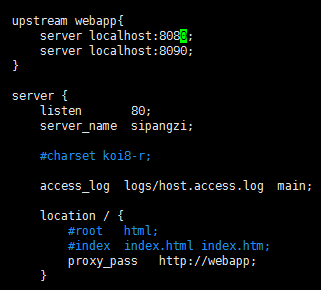

nginx如何实现负载均衡以及实现方式原文出处:本文由博客园博主久伴成忆提供。
原文连接:https://www.cnblogs.com/starluke/p/11723074.html
什么是ngnix？
Nginx是一个http服务器。是一个使用c语言开发的高性能的http 服务器/反向代理服务器及电子邮件（IMAP/POP3）代理服务器。nginx能够支撑5万并发链接，并且cpu、内存等资源消耗却非常低，运行非常稳定，中国大陆使用nginx网站用户有：百度、京东、新浪、网易、腾讯、淘宝等。
NGINX可以用来做什么？
1、反向代理：反向代理（ReverseProxy）方式是指以代理服务器来接受internet上的连接请求，然后将请求转发给内部网络上的服务器，并将从服务器上得到的结果返回给internet上请求连接的客户端,简单来说就是真实的服务器不能直接被外部网络访问,想要访问必须通过代理。
2、动静分离：运用Nginx的反向代理功能分发请求：所有动态资源的请求交给应用服务器，而静态资源的请求（例如图片、视频、CSS、JavaScript文件等）则直接由Nginx返回到浏览器，这样能大大减轻应用服务器的压力
3、负载均衡：负载均衡也是 Nginx常用的一个功能，当一台服务器的单位时间内的访问量越大时，服务器压力就越大，大到超过自身承受能力时，服务器就会崩溃。为了避免服务器崩溃，让用户有更好的体验，我们通过负载均衡的方式来分担服务器压力。我们可以建立很多很多服务器，组成一个服务器集群，当用户访问网站时，先访问一个中间服务器，在让这个中间服务器在服务器集群中选择一个压力较小的服务器，然后将该访问请求引入该服务器。如此以来，用户的每次访问，都会保证服务器集群中的每个服务器压力趋于平衡，分担了服务器压力，避免了服务器崩溃的情况。负载均衡配置一般都需要同时配置反向代理，通过反向代理跳转到负载均衡。
常见问题
1.nginx负载均衡是如何实现的
2.nginx的upstream常见的几种方式的分发策略
解决方案
回答一：nginx负载均衡要两台或以上的应用服务器 ， 并且在nginx.conf中写入相关配置，主要是对proxy_pass,upstream的使用
回答二：常见的几种负载均衡方式
1.轮询（默认）——每个请求按时间顺序逐一分配到不同的后端服务器，如果后端服务器down掉，能自动剔除。
2.weight ——指定轮询几率，weight和访问比率成正比，用于后端服务器性能不均的情况。
3. ip_hash ——每个请求按访问ip的hash结果分配，这样每个访客固定访问一个后端服务器。
4.backup——其它所有的非backup机器down或者忙的时候，请求backup机器。所以这台机器压力会最轻。
5.down——表示单前的server暂时不参与负载
6.fair（第三方）按后端服务器的响应时间来分配请求，响应时间短的优先分配。与weight分配策略类似。
编码实战

nginx和tomcat的区别是什么？
虽然Tomcat也可以认为是HTTP服务器，内部集成了http服务器的相关功能，但通常它仍然会和Nginx配合在一起使用。nginx常用做静态内容服务和反向代理服务器，以及页面前端高并发服务器。严格的来说，Nginx 应该叫做「HTTP Server」；而 Tomcat 则是一个「Application Server」，或者更准确的来说，是一个「Servlet/JSP」应用的容器（Ruby/Python 等其他语言开发的应用也无法直接运行在 Tomcat 上），这种特性导致了它们在使用中有明确的分工职责。tomcat更多用来做做一个应用容器，让java web app跑在里面的东西。大部分适用于静态资源文件的访问（图片，文件）
进阶之路：想要了解更多的进阶知识点的话可以点击这里奥！